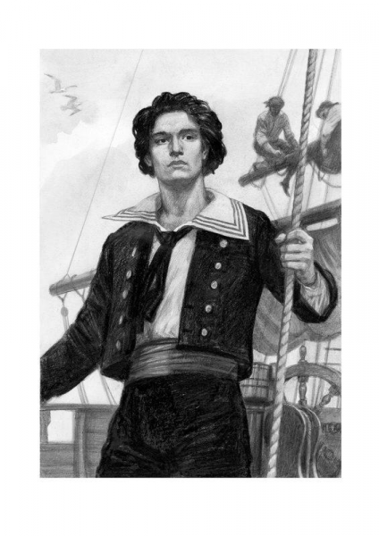

Hello world!
Жил юноша на свете,
Он родом был из мест
Где верят и в законы, и в обеты.
Любовь, судьба, измена,
Донос, допрос, навет...
И где ты, вера и свобода, где ты?
Но рок не справится с тобой,
И если верой и судьбой
Случится пересилить этот криз, то
Душой и телом изменись
И в мир для мщения явись,
И назовись красиво Монте-Кристо.
Так кто же этот Кристо,
Видно нет на нем креста,
Расхристан в чувствах, не в ладах с душой ли?
Да нет, он не антихрист,
Он бывший арестант,
А раньше арестанты больше стоили:
За них платили в розницу и оптом,
В рассрочку и вперед,
Чтобы всерьез упрятать и надолго.
Конечно же из ревности,
Общественных забот,
Конечно из приятельского долга.
Но узники злодеев -
Злопамятный народ:
Тиранам не кричат, что обожают.
Для мщенья выгрызаются
Из скалистых пород,
Словами и кинжалами их жалят.
Но не у всех Дантесов
В делах такой успех,
И не у всех богатство в сундуках, но
Всяк Дантес был против всех,
Да всяк Дантес был против всех,
И от таких всегда паленым пахло.
Дантес - он Кристо, не Христос.
Сам спасся, нас же не вознес,
Но есть вопрос -
Что будет после нашей мнимой смерти?
И автор тем уже не прост,
Что задал этот нам вопрос
И дал ответ, а вы его проверьте.
Он так любил
муз. и сл. А. Градский
Он так любил, что не верил он,
Что перед ним закроют двери в дом,
Двери в дом,
Да, не верил он.
Птица летит, все цветет кругом,
Лиц не закрыть, точно двери в дом,
Верил он
И не верил он.
Он боялся думать о ней
И мечтать о ней
Столько долгих дней,
Столько долгих дней,
И мечтать о ней.
Он не мог понять, что сама судьба
Руки развела, двери заперла,
Что она неверна.
Прошлая жизнь его не жива,
Просто ли вышиты кружева,
Сложно ли - продали.
Он боялся думать о ней
И мечтать о ней
Столько долгих дней,
Столько долгих дней,
Да, мечтать о ней.
Если меришь всех по себе,
Если не поверишь судьбе,
Если не оценишь ее Дар ты.
Если возгордиться не прочь,
А вот стать птицей не вмочь,
То запомни хоть имена, Даты,
Да, ты так любил.
Не переспоришь, не утаишь,
Все, что ты стоишь, на чем стоишь,
Богом нам Отдано.
Больно, не больно - его вина,
Только любовь есть всему цена.
Раз, два, три - Продано!
Он боялся думать о ней
И мечтать о ней
Столько долгих дней,
Столько долгих дней,
Столько долгих дней.
Далеко, близко ли долго ли,
Донами,Стиксами, Волгами,
Знали мы
Где вода.
Туп, глуп, стар, сер, сед,
Тут не ? всем
О любви Невода.
Знали мы где суть, а где вода.
Прах твой суть, что ложь,
Правду ты сам поймешь,
Только лишь Подрастешь.
Кто твой враг, кто твой друг,
Прав, не прав мир вокруг,
Глотку рвут
Боль разлук.
Он так любил, что не верил он,
Что перед ним закроют двери в дом,
Двери в дом,
Да, не верил он.
Птица летит, все цветет кругом,
Лиц не закрыть, точно двери в дом,
Верил он
И не верил он.
Он боялся думать о ней
И мечтать о ней
Столько долгих дней,
Столько долгих дней,
И мечтать о ней.
Ardachok, guuudd
